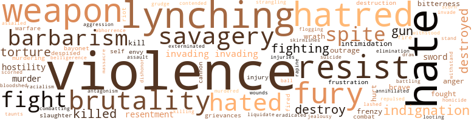
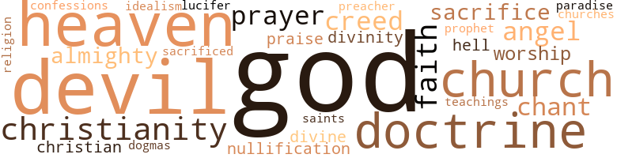

From Yesterday Thru Tomorrow, by Hill, Arthur C. and J.W. Miller (1951)
24 music-related terms matched in this text.
Most frequent terms in this topic: chant (4); section (4); Section (3); theme (2); instrument (2)
chant.n.01
Definition: a repetitive song in which as many syllables as necessary are assigned to a single tone
| word | sentence |
|---|---|
| chant | I heard the wailing , melancholy chant of men and women praying to God to be free . |
| chant | A voice spoke from the distance - dull , faint and melancholy - like a chant or a prayer . |
| chant | This was the unearthly chant that stirred the souls and imaginations of men , caused hearts to beat faster , and chilled the blood within human veins . |
chorus.n.01
Definition: any utterance produced simultaneously by a group
| word | sentence |
|---|---|
| chorus | The mystic chords of memory , stretching from every battlefield and patriot grave to every living heart and hearthstone , all over this broad land , will yet swell to the chorus of the Union , when again touched , as surely they will be , by the better angels of our nature . " |
dance.n.01
Definition: an artistic form of nonverbal communication
| word | sentence |
|---|---|
| dance | " Very soon we shall see a flaming dance of Hell ; we shall see the flashing torrents and the man-made lightning of battle ; we shall hear trumpets blaring and see armies marching , horses galloping ; and we shall wade knee-deep in the blood of men , men with ghastly wounds and fragments of swords and guns in their unfeeling hands . |
music.n.01
Definition: an artistic form of auditory communication incorporating instrumental or vocal tones in a structured and continuous manner
| word | sentence |
|---|---|
| music | A radio program emanating from outside of the South and discussing the Negro and his problems is usually cut off the air and replaced by mountain music which , with its wail and chant , clearly shows , like the Negro spiritual , that something is radically wrong in the South . |
musical_instrument.n.01
Definition: any of various devices or contrivances that can be used to produce musical tones or sounds
| word | sentence |
|---|---|
| instrument | The ambitions of politicians may have instigated the rebels to act , but they would have been impotent without slavery as their instrument . |
| instrument | Like the Negro , they are a political instrument , valuable as long as they are poor and landless and ignorant . |
| instruments | I do not say this because of the difficulties between Negroes and whites or because men took the instruments of technology and made them fit a pattern of prejudice , violence and intimidation . |
rhythm.n.04
Definition: the arrangement of spoken words alternating stressed and unstressed elements
| word | sentence |
|---|---|
| rhythm | What beyond their natural instincts ; a knowledge of mumbo jumbo and a natural rhythm ? |
section.n.01
Definition: a self-contained part of a larger composition (written or musical)
| word | sentence |
|---|---|
| Section | Section 2 . |
| Section | Also to the ninth and tenth sections of an Act entitled " An Act to suppress Insurrection , to punish Treason and Rebellion , to seize and confiscate property of the Rebels , and for other purposes , " approved July 17 , 1862 , and which sections are in the words and figures following : Section 9 . |
| Section | Section 10 . |
| section | In this Civil War we see the Northerner fighting for security of the Union ; the Southerner for the security of his section ; and , belatedly , the Negro fighting for freedom . |
| section | So it is planned that the British Army must be lured out of the South and into the northern section where the slaves are not so numerous . " |
| section | The daily Nashville Patriot said , " The North , marked by great bitterness of feeling in ' that section towards the most important domestic institution ( slavery ) in the South , aroused an opposite antagonistic feeling here . " |
| section | " What you have seen is merely the preparation of the Southern people for self-sacrifice to what they believe to be the best interests of their impoverished section . |
serenade.n.02
Definition: a song characteristically played outside the house of a woman
| word | sentence |
|---|---|
| serenade | The shocking realization of their effectiveness was brought clearly to me one night in Charleston as I listened to a Secessionist leader replying to a serenade . |
sing.v.02
Definition: produce tones with the voice
| word | sentence |
|---|---|
| sung | Yet my heart was too full of gladness to mind any of these discomforts ; in fact I could have sung aloud for the joy of being alive . |
song.n.01
Definition: a short musical composition with words
| word | sentence |
|---|---|
| song | They want grounds so high and so dry that no more in life will they have to lie awake far into the night listening to the song of the malaria-bearing mosquito , and of waking up in the morning too sick and too tired to move . |
symphony.n.01
Definition: a long and complex sonata for symphony orchestra
| word | sentence |
|---|---|
| symphony | I spoke these words aloud , and the sound of my own voice echoing in the darkness came back to my ears in a senseless symphony of fantastic horror . |
theme.n.03
Definition: (music) melodic subject of a musical composition
| word | sentence |
|---|---|
| theme | I find that public opinion is much as the President says in regard to our people , and indeed there have been a series of anti-Negro riots in the larger cities , all of which have as their theme the conviction that the Negro does not belong here . " |
| theme | The theme seems to be to win the war , free the slaves , and then send them away forever from this country . " |
tone.v.01
Definition: utter monotonously and repetitively and rhythmically
| word | sentence |
|---|---|
| chant | A radio program emanating from outside of the South and discussing the Negro and his problems is usually cut off the air and replaced by mountain music which , with its wail and chant , clearly shows , like the Negro spiritual , that something is radically wrong in the South . |
294 violence-related terms matched in this text.
Most frequent terms in this topic: violence (25); hate (15); hatred (10); resist (9); fury (8)
abhorrence.n.01
Definition: hate coupled with disgust
| word | sentence |
|---|---|
| abhorrence | As one looks into their tired eyes , many things are seen ; first , looks of abhorrence and utter helplessness ; then , looks of sublime anticipation for that Someday when , they too , will be free . |
aggression.n.01
Definition: a disposition to behave aggressively
| word | sentence |
|---|---|
| aggression | The abolition elements of the North are disturbed by this aggression , and more disturbed by the hanging of one of their supporters , John Brown . " |
anger.n.01
Definition: a strong emotion; a feeling that is oriented toward some real or supposed grievance
| word | sentence |
|---|---|
| anger | Negro troops , stationed in the South , faced not only the anger of the white troops encamped nearby , but the bloodthirsty civilian police officers as well . |
| anger | It could not have been their furious anger over the arming of the Negro , because the rebel Congress had passed a law authorizing their leader to take into the rebel army as many Negro slaves as he may deem expedient to perform military service in whatever capacity he may direct . |
| anger | With the light of ageless wisdom shining from his glittering eyes , and smouldering anger carefully controlled in his voice , he began , " I have said many times that it is not for you to surmise , generalize , wonder or guess . |
attack.v.01
Definition: launch an attack or assault on; begin hostilities or start warfare with
| word | sentence |
|---|---|
| assailed | In the halls of Congress , however , brave souls came to the forefront and bitterly assailed the reasons for the loss . |
battle.v.01
Definition: battle or contend against in or as if in a battle
| word | sentence |
|---|---|
| battling | " Others , weary of battling the yearly floods of the rampaging southern rivers merely are seeking higher ground . |
| combatting | There , also , is the place where hate propaganda is the most effective , and the means of combatting it most difficult . |
| combat | And to combat evil , there is always needed a force stronger than mortal man . |
bayonet.n.01
Definition: a knife that can be fixed to the end of a rifle and used as a weapon
| word | sentence |
|---|---|
| bayonets | There are 50,000 bayonets in the Union Army from the border slave States . |
| bayonet | And there will be some Black men who can remember that , with silent tongue , and clinched teeth , and steady eye , and well-poised bayonet , they have helped mankind on to this great consummation , while I fear there will be some White ones unable to forget that with malignant heart and deceitful speech they have striven to hinder it . ' |
belligerence.n.01
Definition: hostile or warlike attitude or nature
| word | sentence |
|---|---|
| belligerence | The union lay virtually prostrate before the belligerence of opposing factions . |
bloodshed.n.01
Definition: the shedding of blood resulting in murder
| word | sentence |
|---|---|
| bloodshed | Strife and bloodshed was the order of the day . |
brush.n.06
Definition: a minor short-term fight
| word | sentence |
|---|---|
| skirmishes | Bitter oratorical skirmishes were fought between the border State Congressmen and the fighting Northerners , the outcome of which clearly revealed that emancipation of the slaves could not be far off . |
brutality.n.02
Definition: a brutal barbarous savage act
| word | sentence |
|---|---|
| barbarism | To sell or Enslave any captured persons , on account of his Color , and for no offense against the Laws of War , is a relapse into barbarism , and a crime against the civilization of the age . |
| barbarism | The chains of chattel slavery and barbarism will soon be replaced by the chains of serfdom and bestiality . " |
| barbarism | " The Negro was hunted , hounded , and made desperate as barbarism in the form of murder , lynching , kidnaping and intimidation punctuated anti-Negro propaganda . |
| barbarism | Now it is believed that lynching and-mob terror , since the last great war , are rank cowardice and sheer barbarism . |
| barbarism | They actually believe that if it were not for them and their unthinkable savagery , the Negro and other so called inferior peoples might pull down our splendid cities and return America to the forests of primeval barbarism . |
| barbarism | Constantly anti-Negro , he excuses the acts of barbarism and talks of tolerating the regime of terror . |
| barbarism | Technocracy is the machinery of barbarism and man had better learn to control it or else prepare to have it destroy him . " |
bullying.n.01
Definition: the act of intimidating a weaker person to make them do something
| word | sentence |
|---|---|
| intimidation | " The Negro was hunted , hounded , and made desperate as barbarism in the form of murder , lynching , kidnaping and intimidation punctuated anti-Negro propaganda . |
| intimidation | They fail to see their weakness , fear and intimidation . |
| intimidation | I do not say this because of the difficulties between Negroes and whites or because men took the instruments of technology and made them fit a pattern of prejudice , violence and intimidation . |
cannon.n.04
Definition: heavy automatic gun fired from an airplane
| word | sentence |
|---|---|
| cannon | It was to be the works of God amid the booming of cannon , clanging steel , and the trampling of horses and men in human gore that would partially lift the heavy burden that paralyzed the South and let the oppressed go free . |
| cannon | As death stalked him , he lay there trembling with delight and expressed great hope that the ball from the cannon would do more for the cause of secession than all the stump speeches ever made . |
contemn.v.01
Definition: look down on with disdain
| word | sentence |
|---|---|
| scorn | " I will mention another thing though it meet only your scorn and contempt . |
| despised | He is needed as the enemy , the despised enemy so necessary to keep the impoverished whites happy . |
| despised | The white masses are given a feeling of superiority in their misery by the presence of the hated and despised Negro . |
| scorned | It lacerated the tenderest feelings , scorned all scruples of conscience , and trampled upon the laws of God . |
contend.v.06
Definition: be engaged in a fight; carry on a fight
| word | sentence |
|---|---|
| contended | Mr. Douglas contended at some length that this government was " founded on the white basis , for the benefits of the whites and their posterity . |
craze.n.02
Definition: state of violent mental agitation
| word | sentence |
|---|---|
| frenzy | Emotions and enthusiasm have been whipped to a frenzy and now these wizards are ready to administer the fatal dose to the citizenry of the South . |
| frenzy | " This was a soul-stirring incident but when the matter came before the base minds of the jury , Judge Lawless ( true to his name ) , the magistrate , declared that if a mob carry out its deeds of violence and blood by some ' mysterious and metaphysical and almost electric frenzy , those participating in it are absolved from guilt and are not subjects of punishment . |
| frenzy | Hence they worked the people up to the required point of frenzy . |
defy.v.01
Definition: resist or confront with resistance
| word | sentence |
|---|---|
| withstand | " He was unable to withstand the constant barrage of propaganda . |
| withstood | " For thirty-four hours the fort withstood the terrific bombardment while the whole Southland broke out into boundless joy . |
destroy.v.04
Definition: put (an animal) to death
| word | sentence |
|---|---|
| destroy | The only way to destroy it , then , is to destroy man . |
| destroyed | All , however , had one thing in common ; a resolute spirit and a will that could not be conquered or destroyed . " |
| destroyed | They knew before going there that the Southern mind had been destroyed but they did not realize that the soil and the future of unborn generations had been destroyed along with the mind . |
| destroyed | They knew before going there that the Southern mind had been destroyed but they did not realize that the soil and the future of unborn generations had been destroyed along with the mind . |
| destroyed | Vast swamp areas bred malaria , and once rich fish and wildlife areas were undeveloped or destroyed . |
| destroy | Democracy will perish in America if it continues to haggle and bargain with forces that are doing their utmost to destroy it . |
| destroy | Technocracy is the machinery of barbarism and man had better learn to control it or else prepare to have it destroy him . " |
| destroy | It is this technique of the propagandist that democracy must destroy or it will destroy democracy . |
| destroy | " From the very hour since the Republic was born , there have been many of its own citizens who have hated it and , when they could not rule , have been always ready to do what they could by conspiracy , sedition , mutiny , nullification , secession or otherwise to weaken and destroy it . |
| destroyed | The mob also destroyed Mr. Love-joy 's printing press . |
draw.v.23
Definition: pull (a person) apart with four horses tied to his extremities, so as to execute him
| word | sentence |
|---|---|
| draw | It was not evident amid the joy that the solemn Act of Separation was fated to draw into its wake so many other Southern States and to be blotted out with the blood of hundreds of thousands of their own brave sons and their equally courageous Northern brothers . |
eliminate.v.03
Definition: kill in large numbers
| word | sentence |
|---|---|
| eradicated | He lashed out in a statement in which he elaborately defended slavery as " the corner-stone of the republican edifice , " declared the rabble the unwashed , " bleached or unbleached , a dangerous element in the body politic , " and with strong convictions affirmed that the abolitionist and his measures should be eradicated and that " the laws of any community should punish interference with death without benefit of clergy . " |
| annihilated | He said , " Gentlemen , I thank you , especially as you have at last annihilated this accursed Union reeking with corruption and insolent with excess of tyranny . |
elimination.n.05
Definition: the murder of a competitor
| word | sentence |
|---|---|
| elimination | The elimination of one minority will surely increase the pressure on others . |
envy.n.01
Definition: a feeling of grudging admiration and desire to have something that is possessed by another
| word | sentence |
|---|---|
| envy | They fan the flames of imaginary grievances and sow disunity by planting economic envy and social resentment in the hearts and minds of men . |
| envy | Instead of bathrooms , autos and other symbols of progress and prosperity , they have left a wild , emotional mass , filled to overflowing with envy and hatred . |
exterminate.v.01
Definition: kill en masse; kill on a large scale; kill many
| word | sentence |
|---|---|
| exterminated | On many occasions tribes and even nations have been nearly exterminated . |
ferociousness.n.01
Definition: the trait of extreme cruelty
| word | sentence |
|---|---|
| brutality | " And in a sense it is sheer insanity to use one man 's brutality and animal instincts to make a beast of a second man , and a third man a crawling beggar . |
| brutality | They have accepted as their leaders men who believe in violence and brutality . |
| brutality | He is kept indignant , angry and ready at all times for acts of brutality and violence . |
| brutality | He advocates a sleepwalker 's immunity , a higher-than-earth philosophy , in the face of violence , brutality and death . |
| brutality | " Where , wonders the helpless Negro , is the device that will put an end for all time to this brutality , violence and hatred , this flouting of the principles of the Constitution ? |
| brutality | " It is tyranny to deny one segment of the population the right to food , clothing and shelter on account of color , and deny another segment these same fundamentals in exchange for permission to indulge in brutality and violence . |
| brutality | He wants only those who enjoy cruelty and brutality . |
| brutality | Above all , remember the appalling extremities they used to achieve their discriminatory ends ; their appeal to the worst instincts of mankind - envy , hostility , brutality and ill-will . " |
fight.n.02
Definition: the act of fighting; any contest or struggle
| word | sentence |
|---|---|
| combat | From his tenderest years onward , he is in mortal combat with a thing born of Hell ; wicked , diabolical , and unwavering . |
fight.n.05
Definition: a boxing or wrestling match
| word | sentence |
|---|---|
| fight | There is an opportunity for progressive leadership to work unhampered , and for this work they should be inspired by Psalm 35 : Plead my cause , O Lord , with them that strive with me : fight against them that fight against me . |
| fight | There is an opportunity for progressive leadership to work unhampered , and for this work they should be inspired by Psalm 35 : Plead my cause , O Lord , with them that strive with me : fight against them that fight against me . |
| fight | Mr. Lincoln , in a frantic effort to return the fight to principle and principle alone , retorted , " Senator Douglas is of world-wide renown . |
| fight | The pioneers in the fight against the commerce in human beings failed to comprehend the magnitude of this growing monster or the powerful grasp in which it held the Nation . |
fight.v.02
Definition: fight against or resist strongly
| word | sentence |
|---|---|
| fighting | In this Civil War we see the Northerner fighting for security of the Union ; the Southerner for the security of his section ; and , belatedly , the Negro fighting for freedom . |
| fighting | In this Civil War we see the Northerner fighting for security of the Union ; the Southerner for the security of his section ; and , belatedly , the Negro fighting for freedom . |
| fought | The moral support of the world was with them and the cause for which they so gallantly fought . |
| fought | In distant lands , Negro soldiers bore the brunt of humiliation and death behind the lines from the whites with whom they fought , and only death from the enemy ahead . |
| fighting | " Now , my son , one need not be a magic-man to picture clearly why the Southern masses began to feel good when politicians began to fill their ears and arouse their fighting spirit with these lies . |
| fight | The race propagandist knows that those who fight against him are insufficient in number and for the most part badly led . |
| fight | The people were aroused to the point of committing social suicide by the battlecry of Black Republicanism or white supremacy voiced by the old men who held utter contempt in their hearts for the people who were later to fight their battle . |
| fighting | " So strangely oblivious had the people become to the simplest claims of humanity and justice that we find the forces of freedom and slavery fighting many vicious battles . |
| fight | They constantly seize me and fight to make me reveal myself to this world , a world which has nothing but contempt for me ; and in its present state I have nothing but contempt for this world . " |
| fought | Bitter oratorical skirmishes were fought between the border State Congressmen and the fighting Northerners , the outcome of which clearly revealed that emancipation of the slaves could not be far off . |
| fighting | Bitter oratorical skirmishes were fought between the border State Congressmen and the fighting Northerners , the outcome of which clearly revealed that emancipation of the slaves could not be far off . |
frustration.n.03
Definition: a feeling of annoyance at being hindered or criticized
| word | sentence |
|---|---|
| frustrations | You are no longer plagued with the ills , hungers , thirsts , pains and frustrations of puny man . |
| frustration | The Negro church should no longer be maintained as an emotional outlet for Negro frustration and despair . |
fury.n.01
Definition: a feeling of intense anger
| word | sentence |
|---|---|
| fury | Even in the healthiest body , it lies dormant , unnoticed and unfelt unless disturbed from without , and then , once disturbed , it becomes a raging fury . |
| fury | Have you ever noticed how the mere mention of the word Negro brings fury to the eyes of the Southern white ? |
| fury | " It is to the distinct advantage of the Southern politician to keep the fires of fury burning . |
| fury | The masters of propaganda have yet to devise a slogan which will produce the desired fury . |
| fury | The souls of true men revolted against the barbaric treatment of the Negroes and rose up in fury against the men and laws that sanctioned and sustained slavery . |
| fury | Had I not , you never would have escaped that hate-crazed lynch mob ; had I not guided your footsteps they would have certainly caught you and dangled your broken body at the end of a rope to gloat over in barbaric Anglo-Saxon fury . " |
| fury | " The threats of the South turned into ghastly reality when a truly great man was seized in barbaric fury and murdered by a mob in the state of Illinois . |
| fury | Mr. Gidding remained stalwart , however , and the temper of the South grew to such intense fury that Southern Congressmen openly threatened Northern Congressmen . |
grudge.n.01
Definition: a resentment strong enough to justify retaliation
| word | sentence |
|---|---|
| grievances | The District has more than one Free Colored to six Whites ; and yet in its frequent petitions to Congress I believe it has never presented the presence of Free Colored persons as one of its grievances . |
| grievances | They fan the flames of imaginary grievances and sow disunity by planting economic envy and social resentment in the hearts and minds of men . |
| grudge | " In another case , a policeman arrested a Negro against whom he had a personal grudge , beat him with a whip , and forced him , despite his protestations that he could not swim , into a river where he drowned . |
gun.n.01
Definition: a weapon that discharges a missile at high velocity (especially from a metal tube or barrel)
| word | sentence |
|---|---|
| guns | " In the nick of time the high command realized that to overlook the poor white could be a fatal error , so the big guns of propaganda set their sights upon him , not to deliver intermittent thrusts but a ceaseless barrage aimed at the worst instincts of mankind . |
| gun | The mob no longer gathers with rope , torch and gun to perforin its brutal and lawless task while thousands of screaming partisan fans vie with each other for a souvenir finger or a toe of the lynched Negro man or woman . |
| guns | " Very soon we shall see a flaming dance of Hell ; we shall see the flashing torrents and the man-made lightning of battle ; we shall hear trumpets blaring and see armies marching , horses galloping ; and we shall wade knee-deep in the blood of men , men with ghastly wounds and fragments of swords and guns in their unfeeling hands . |
| gun | The sullen echos of the first gun fired at Fort Sumter sounded the funeral knell of slavery , and soon black men and women will begin to count the rays of sunshine that freedom will shortly bring . |
| guns | Meanwhile the Confederates employ slave labor to dig ditches and throw up entrenchments and in the battle of Bull Run have placed guns in the hands of the slaves . " |
hate.n.01
Definition: the emotion of intense dislike; a feeling of dislike so strong that it demands action
| word | sentence |
|---|---|
| hatred | They operate in secrecy and silence , breeding discontent , envy , hatred and ill-will . |
| hatred | With it came the selfish cancer of racism to spill the pernicious drug of hatred . |
| hatred | The world was shaken to its foundations as hatred flexed its muscles by brutally murdering the savior of the Union . |
| hatred | " Race hatred works in the same manner as harmful bacteria , and like all bacteria it was present when man was delivered from the womb of the beast . |
| hatred | You have been shown that the men who boarded the bandwagon of race hatred did so for one of two reasons ; out of conviction or out of opportunism . |
| hatred | What is left can not in the true sense be called news ; it is anti-Negro venom that breeds hatred and ill-will . |
| hate | " The most diabolical thing about the world of anti-Negroism is that with the ushering in of each new generation the merchants of hate sow their seeds in new soil . |
| hate | From their offices , high and low , they pour out hate and vengeance . |
| hate | The Southern mind is fed a steady stream of hate propaganda . |
| hatred | Instead of bathrooms , autos and other symbols of progress and prosperity , they have left a wild , emotional mass , filled to overflowing with envy and hatred . |
| hate | " The sleeping giant slumbered on , his body thoroughly poisoned by hate and his appetite satisfied by occasional outbreaks of lynching which served also to demonstrate to his supposed enemy that he was still the undisputed master of all that he could see . |
| hate | It has been the tendency of some innocent souls to look upon the Negro as an immature child living in a constantly shifting maze of perplexity , fear and hate . |
| hate | Others , motivated by the propaganda of hate and ill-will , cling with relentless tenacity to the ancient and threadbare theory of total inferiority and utter uselessness . |
| hate | There , also , is the place where hate propaganda is the most effective , and the means of combatting it most difficult . |
| hatred | " Where , wonders the helpless Negro , is the device that will put an end for all time to this brutality , violence and hatred , this flouting of the principles of the Constitution ? |
| hate | " The popularity of hate propaganda is often tested by indulgence in the brutal luxury of violence against Negro people . |
| hate | " The furious propaganda of hate and ill-will has been so thoroughly instilled into the mind of the white Southerner that any doubt that might arise through sober reflection can not penetrate his drugged brain . |
| hate | They say that hate groups are not dangerous . |
| hatred | Not only does it pass in the South , but in the North and West the virulent bacteria of race hatred divides , misleads and paralyzes . |
| hate | " There are now more than a hundred organizations in America living on the disease of hate . |
| hate | The stage is now set ; the fuse of hate has been placed in the souls of men to explode with a force so great that the reverberation will be felt in modern times . |
| hate | " You will learn later that when this powder keg of hate exploded , all Hell was let loose on the South , and economic insecurity , social upheaval and political inequality were the results . |
| hate | " Venomous seeds of hate have spread over the nation like a tidal wave and have inundated the minds of men . |
| hatred | " To keep alive the malignant fires of hatred in the hearts of the people , the leaders thought a lynching was necessary . |
hate.v.01
Definition: dislike intensely; feel antipathy or aversion towards
| word | sentence |
|---|---|
| hated | " But it is well that you know other things of as much importance such as the small group of greedy , power-struck men that from the very beginning hated and opposed the Union . |
| hate | They bitterly hate free men , free labor , and free institutions . |
| hates | Perhaps the Southerner hates Communism but he has no knowledge of what it means . |
| hated | His greatest blunder was that he was an unimaginative thinker who hated and deplored any change in the status quo . |
| hated | In the few short hours from midafternoon to midnight , I have become a monster , a hated , hunted monster , fleeing for my life . |
| hated | The white masses are given a feeling of superiority in their misery by the presence of the hated and despised Negro . |
| hated | Mr. Lincoln said , " I think about slavery as much as any abolitionist - I have been an Old Line Whig - and I have hated it , but I have been quiet about it until this new era of the introduction of the Nebraska Bill began . |
| hated | " From the very hour since the Republic was born , there have been many of its own citizens who have hated it and , when they could not rule , have been always ready to do what they could by conspiracy , sedition , mutiny , nullification , secession or otherwise to weaken and destroy it . |
| hated | Bitter resentment towards the hated and dreaded abolitionist provoked the South intensely . |
homicide.n.01
Definition: the killing of a human being by another human being
| word | sentence |
|---|---|
| homicide | What constitutes a lynching in the terms generally acceptable allows far too many of these brutal crimes to pass under the guise of everyday homicide . |
hostility.n.01
Definition: a hostile (very unfriendly) disposition
| word | sentence |
|---|---|
| hostility | The situation generally shaped up in this fashion : the white migrant displayed hostility toward the Negro and the natives of particular localities displayed hostility to them all . |
| hostility | The situation generally shaped up in this fashion : the white migrant displayed hostility toward the Negro and the natives of particular localities displayed hostility to them all . |
| hostility | Above all , remember the appalling extremities they used to achieve their discriminatory ends ; their appeal to the worst instincts of mankind - envy , hostility , brutality and ill-will . " |
| hostility | It is a Union whose vital principle is hostility to African slavery in the South and whose policy it is to extinguish it . |
hostility.n.02
Definition: a state of deep-seated ill-will
| word | sentence |
|---|---|
| antagonism | " The ambition of men , forceful and powerful , magnificently evil , succeeded in irritating both the free and the slave-holding sections of this country into antagonism against each other . |
hurt.v.04
Definition: cause damage or affect negatively
| word | sentence |
|---|---|
| hurt | " The Negro is hurt ; just how badly , men perhaps will never know . |
indignation.n.01
Definition: a feeling of righteous anger
| word | sentence |
|---|---|
| indignation | They know by experience that an expression of indignation would bring down upon them discipline in varying degrees of intensity . |
| indignation | " Moral indignation over such conditions is as futile as ignoring them . |
| indignation | It is only natural that men of great wealth and privilege should express little indignation over the brutal compulsion of a segment of the population . |
| indignation | On one hand , the weakness and bestiality of men is exploited ; on the other , indignation is poured over the lynchers . |
| indignation | He wants to know when the word Negro will cease to be a device to stir other racial groups to embittered indignation . |
| outrage | " Thus it is that outrage after outrage is committed and the bewildered struggle wearily on ; hoping perhaps that the next generation will be pressed from new molds , praying perhaps that their children will then be shaken loose forever from the galling burden of Race . " |
| outrage | " Thus it is that outrage after outrage is committed and the bewildered struggle wearily on ; hoping perhaps that the next generation will be pressed from new molds , praying perhaps that their children will then be shaken loose forever from the galling burden of Race . " |
| outrage | They wonder why it is that the color of one man 's skin , or the manner in which he worships God , is enough to induce another man to violate civil law , to murder , destroy and outrage ? |
| indignation | It aroused great indignation among the Northern patriots . |
injury.n.01
Definition: any physical damage to the body caused by violence or accident or fracture etc.
| word | sentence |
|---|---|
| hurt | " This man seeketh not the welfare of the people , but the hurt . " |
| injuries | He expressed great fear that they could not live peacefully together and said that ' deep-rooted prejudices entertained by the whites , ten thousand recollections by the blacks of the injuries they have sustained , distinctions which nature has made and many other circumstances will divide us into parties and produce convulsions which will probably never end but in the extermination of our or of the other race . ' |
| injury | Resistence to wrong and injury - to tyranny whether of one man or eighteen million - is the cherished right of every citizen of the South . " |
| injury | On the faces of the freed , no glimmer of bitterness was discernible toward those who had done them injury . |
invade.v.01
Definition: march aggressively into another's territory by military force for the purposes of conquest and occupation
| word | sentence |
|---|---|
| invading | Once there we found the body assembled to hear a speech by Ben Wade of Ohio who was saving , " I tell you frankly that we did not lay down the principle in our platform , that we would not prohibit , if we had the power , slavery from invading another inch of the Free Soil of this Government . |
| invade | On the other hand , our platform repudiated the idea that we have any right , or harbor any ultimate intention , to invade or interfere with your institutions in your own states . |
| invading | There is another thing that an invading army can not do . |
| invading | Now I have told you what an invading army can not do . |
| invading | An invading army in an enemy 's country , where there is a dense population , can feed itself at a very little cost ; it does not always pay for what it gets . |
| invading | An invading army can burn down towns ; an invading army can burn down manufacturies ; it can starve operatives . |
| invading | An invading army can burn down towns ; an invading army can burn down manufacturies ; it can starve operatives . |
| invading | But an invading army , and an army to defend a country , both need a military chest . |
jealousy.n.01
Definition: a feeling of jealous envy (especially of a rival)
| word | sentence |
|---|---|
| jealousy | They inspire jealousy and discontent to impose their evil will . |
kill.v.10
Definition: cause the death of, without intention
| word | sentence |
|---|---|
| killed | It is therefore Ordered , that for every soldier of the United States , killed in violation of the Laws of War , a Rebel shall be executed ; and for every one Enslaved by the Enemy or sold into Slavery , a Rebel soldier shall be placed at hard ' work on the public works , and continued at such labor until the other shall be released and receive the treatment due a prisoner of War . |
| killed | Eight Negro prisoners were killed by their white guards while , it was said , they were attempting to escape . |
| killed | Two were killed after they had crawled under the bunkhouse and two others as they ran to their cells . |
| killed | Accusing the Negro of hogging the road , they dragged him from his wagon and killed him . |
| kill | Why , they ask , are men urged to display diabolical instincts of cruelty , and told to kill and torture , to rob , bum , beat , and forever oppress defenseless minorities ? |
| killed | " On many occasions slaves taken as servants by officers of the armed forces escaped or were killed in battle . |
| kill | They have only one thought , one thought alone ; find me , find me and kill me . |
| kill | Do you realize that unfounded generalizations can quench pity , freeze kindness , kill all gentle emotions and rouse in man the spirit of a beast of prey ? " |
killing.n.02
Definition: the act of terminating a life
| word | sentence |
|---|---|
| killing | There was no justification for the killing . |
looting.n.01
Definition: plundering during riots or in wartime
| word | sentence |
|---|---|
| looting | In the meantime the sunny Southland was honeycombed with grafters and demagogues , gobbling up the wealth like burglars looting a palace . |
lynch.v.01
Definition: kill without legal sanction
| word | sentence |
|---|---|
| lynching | Now it is believed that lynching and-mob terror , since the last great war , are rank cowardice and sheer barbarism . |
lynching.n.01
Definition: putting a person to death by mob action without due process of law
| word | sentence |
|---|---|
| lynchings | It has been used as a cover-up mechanism for numerous lynchings as well as the complete denial of Constitutional rights to millions of people . " |
| lynching | " The sleeping giant slumbered on , his body thoroughly poisoned by hate and his appetite satisfied by occasional outbreaks of lynching which served also to demonstrate to his supposed enemy that he was still the undisputed master of all that he could see . |
| lynching | The dynamite that pauperized the South is everywhere , and its fuses are the race-baiter and hate-monger who are usually behind every race riot and lynching . |
| lynching | " It is the existence of the small southern town that forces the need for a new definition of the word lynching . |
| lynching | What constitutes a lynching in the terms generally acceptable allows far too many of these brutal crimes to pass under the guise of everyday homicide . |
| Lynching | Lynching is done now by a picked cadre of specialists who go about their work with the skill and precision of trained machinists . |
| lynchings | " Can this barbarity be explained away by saying that village life in the South is so dull and uninteresting that occasional lynchings are a necessary stimulant to condition one for the regimented struggle ? |
| lynching | " This does not now hold true when the whole process of lynching has been taken out of the hands of the mob and placed in the hands of specialists . |
| lynchings | The whole process is a diversion , even the lynchings . |
| lynching | Great emphasis , perhaps too great , has been placed on the fact that in thirteen of fifteen lynching attempts , police officials frustrated the anticipations of the mob . |
| lynching | " To keep alive the malignant fires of hatred in the hearts of the people , the leaders thought a lynching was necessary . |
malice.n.01
Definition: feeling a need to see others suffer
| word | sentence |
|---|---|
| spite | " Fellow-citizens , we can not escape history , we , of this Congress and this Administration , will be remembered in spite of ourselves . |
| spite | Although it is said he disliked slavery , his aristocratic pride prevented him from taking any action in spite of the fact that slavery lay dormant during his administration . |
| spite | " But in spite of the stern and relentless opposition set up by fifth column activities , the anti-slavery movement increased in numbers , influence and power . |
| spite | These brave people , true to their convictions and deaf to the charges of selfish fear and interest , did not relinquish their work in spite of social ostracism , personal insult , exclusion from God 's house , and criminal trials and convictions . |
| spite | In spite of these acts , the North could not fail to be impressed by the degrading and dangerous presence of a system that generated such spirit and prompted such actions and deeds . |
| spite | In spite of the indignant remarks made by Thomas Jefferson about the Negro , I am positive he is right when he said ' that justice is the fundamental law of society ; that the majority , oppressing an individual , is guilty of a crime . ' |
murder.n.01
Definition: unlawful premeditated killing of a human being by a human being
| word | sentence |
|---|---|
| murder | " The Negro was hunted , hounded , and made desperate as barbarism in the form of murder , lynching , kidnaping and intimidation punctuated anti-Negro propaganda . |
| murder | They wonder why it is that the color of one man 's skin , or the manner in which he worships God , is enough to induce another man to violate civil law , to murder , destroy and outrage ? |
| murder | " It was this revolting judicial decision that prompted the mob to move in beast-like precision to murder and gloat over the body of Elijah P. Lovejoy . |
| murder | Time will not allow me to give other examples of murder , mayhem , flogging and kidnapping , but the point to remember is that whenever the people lose interest , it can always be rekindled by using the pretense of the ever-threatening menace and undesirability of the Negro . |
murder.v.01
Definition: kill intentionally and with premeditation
| word | sentence |
|---|---|
| murdering | The world was shaken to its foundations as hatred flexed its muscles by brutally murdering the savior of the Union . |
| murdering | He is now exciting those very people to rise against us and purchase that liberty of which he has deprived them , by murdering the very people on whom he has obtruded them ; thus paying off the crimes committed against the liberties of our people with crimes which he urges them to commit against the lives of others . " |
| murdered | " The threats of the South turned into ghastly reality when a truly great man was seized in barbaric fury and murdered by a mob in the state of Illinois . |
musket_ball.n.01
Definition: a solid projectile that is shot by a musket
| word | sentence |
|---|---|
| ball | As death stalked him , he lay there trembling with delight and expressed great hope that the ball from the cannon would do more for the cause of secession than all the stump speeches ever made . |
neutralize.v.04
Definition: get rid of (someone who may be a threat) by killing
| word | sentence |
|---|---|
| liquidate | The task that faces the Union forces now is to liquidate by exhaustion the forces that would deny that freedom . |
open_fire.v.01
Definition: start firing a weapon
| word | sentence |
|---|---|
| fire | " Now , Leroy Wilson , you are able to see how slavery was used to stir men and fire their passions . |
| fired | Thus the first shot of the Civil War was fired . |
| Fire | From War Secretary Walker to Brigadier General Beauregard went the order : Open Fire on Fort Sumter at 4:30 A.M. , April 12 , 1861 . |
| fired | The sullen echos of the first gun fired at Fort Sumter sounded the funeral knell of slavery , and soon black men and women will begin to count the rays of sunshine that freedom will shortly bring . |
pain.v.02
Definition: cause emotional anguish or make miserable
| word | sentence |
|---|---|
| hurt | I am exhausted and sorely hurt . |
racism.n.02
Definition: discriminatory or abusive behavior towards members of another race
| word | sentence |
|---|---|
| racialism | As we listened to a secession fanatic exciting the joyful populace of Columbia , South Carolina , Mr. Eternity remarked , " You can now plainly see that the racial doctrine has been maintained solely as a necessary element of propaganda ; racialism is that necessary make-believe used to cover the unprincipled struggle for power . |
rape.n.02
Definition: the act of despoiling a country in warfare
| word | sentence |
|---|---|
| rapine | What profits America to call the Devil 's emissaries good when upon their heads they wear the hellish halo of rapine , pillage and slaughter ? |
rape.n.03
Definition: the crime of forcing a woman to submit to sexual intercourse against her will
| word | sentence |
|---|---|
| assault | Eight times did the enemy assault this fort , and eight times were they repulsed . |
rape.v.01
Definition: force (someone) to have sex against their will
| word | sentence |
|---|---|
| dishonor | Said he , " If we undertake to set forth all the causes , do we not dishonor the memory of all the statesmen of South Carolina , now departed , who commenced forty years ago a war against the tariff and against internal improvements , saying nothing of the United States Bank , and other measures which may now be regarded as obsolete . " |
repel.v.03
Definition: force or drive back
| word | sentence |
|---|---|
| repulsed | Eight times did the enemy assault this fort , and eight times were they repulsed . |
resentment.n.01
Definition: a feeling of deep and bitter anger and ill-will
| word | sentence |
|---|---|
| resentment | They fan the flames of imaginary grievances and sow disunity by planting economic envy and social resentment in the hearts and minds of men . |
| bitterness | " Now , " said Mr. Eternity , speaking in tones of bitterness , " this Act was passed less than a month before the tragedy you have just seen . |
| resentment | In order to be able to understand thoroughly why the citizenry was so wrought up in its resentment against the North and the struggle to dislodge the slavocrats , let us look at some of the editorials in the leading newspapers of the South . |
| bitterness | The daily Nashville Patriot said , " The North , marked by great bitterness of feeling in ' that section towards the most important domestic institution ( slavery ) in the South , aroused an opposite antagonistic feeling here . " |
| resentment | Bitter resentment towards the hated and dreaded abolitionist provoked the South intensely . |
| resentment | " Dark clouds of bitter resentment , the thunderous roar of ' on with slavery ' overshadowed the moral forces and forecast a rebellion that was not too far distant . |
| bitterness | On the faces of the freed , no glimmer of bitterness was discernible toward those who had done them injury . |
resist.v.04
Definition: withstand the force of something
| word | sentence |
|---|---|
| stand | " We shall not fail ; if we stand firm we shall not fail ; wise council may accelerate , or mistakes delay , but sooner or later victory is sure to come " Abraham Lincoln . |
| resist | They have learned that it is better to live supinely under intolerable conditions than to resist and make matters worse . |
| resist | The masses can not resist the growth of these men because the masses have not the power to resist . |
| resist | Unable to resist further , I swayed weak and helpless in the steel-like grip of my captor . |
| resist | It took them thirty years to destroy their minds by appealing to their worst instincts and several months to break their will to resist . |
| resist | " Many of our friends and sympathiers sought to resist this despotism whose aggressive advances become difficult to resist as its victories become more complete . |
| resist | " Many of our friends and sympathiers sought to resist this despotism whose aggressive advances become difficult to resist as its victories become more complete . |
| resist | Those who want to resist the tide are soon to find out that they have not the strength to resist . |
| resist | Those who want to resist the tide are soon to find out that they have not the strength to resist . |
| resist | He was a fanatic secessionist who had spent countless hours conjuring up ideas to harass the Union and many years in breaking the will of the people to resist . |
riot.n.01
Definition: a public act of violence by an unruly mob
| word | sentence |
|---|---|
| riots | I find that public opinion is much as the President says in regard to our people , and indeed there have been a series of anti-Negro riots in the larger cities , all of which have as their theme the conviction that the Negro does not belong here . " |
| riot | The dynamite that pauperized the South is everywhere , and its fuses are the race-baiter and hate-monger who are usually behind every race riot and lynching . |
savageness.n.01
Definition: the property of being untamed and ferocious
| word | sentence |
|---|---|
| savagery | Could they bring men and women to believe that America , the country of their birth , the country for which their forefathers had been snatched out of the savagery of their primitive civilization and forced to submit , work and die for a cause that they , solely for reasons of color , could not now nor even in the infinite future be a country they could call their own ? |
| savagery | " The tottering Confederacy , now robbed of one of its potent propaganda weapons , turns its evil mind to savagery , barbaric savagery , the like of which no war before this one or after has ever excelled . |
| savagery | " The tottering Confederacy , now robbed of one of its potent propaganda weapons , turns its evil mind to savagery , barbaric savagery , the like of which no war before this one or after has ever excelled . |
| savagery | " The only true and lasting penalty for all this malignant savagery can come from Almighty God . |
| savagery | They actually believe that if it were not for them and their unthinkable savagery , the Negro and other so called inferior peoples might pull down our splendid cities and return America to the forests of primeval barbarism . |
| savagery | The lowly homes of the Negro and the domiciles of their heroic defenders and sympathizers , even the church of the God , were subjected to the ruthless attack unleashed by barbaric Southern savagery . |
| savagery | The mob with all its Anglo-Saxon savagery is then called into action . |
slaughter.n.03
Definition: the savage and excessive killing of many people
| word | sentence |
|---|---|
| massacre | Understand , I raise no objections against it on legal or Constitutional grounds for , as Commander-in-Chief of the Army and Navy in time of war , I suppose I have a right to take any measure which may best subdue the enemy ; nor do I urge objections of a moral nature in view of possible consequences of insurrection and massacre at the South . |
| slaughter | In reality , they have delivered themselves like Iambs to a merciless slaughter . |
| slaughter | What profits America to call the Devil 's emissaries good when upon their heads they wear the hellish halo of rapine , pillage and slaughter ? |
strangle.v.01
Definition: kill by squeezing the throat of so as to cut off the air
| word | sentence |
|---|---|
| strangling | Not only is the ever-tightening noose of Union arms strangling the exhausted rebels , but the cold hard truth is breaking through the clouds of propaganda . |
suicide.n.01
Definition: the act of killing yourself
| word | sentence |
|---|---|
| self-destruction | If men would consider this , they would not wonder why the Negro is subject to hysterical outbreaks of self-destruction and sudden acts of terror . |
| self-destruction | " It is possible to hope that America 's most critical problem can be solved in time to save her from self-destruction . |
| suicide | The people were aroused to the point of committing social suicide by the battlecry of Black Republicanism or white supremacy voiced by the old men who held utter contempt in their hearts for the people who were later to fight their battle . |
sword.n.01
Definition: a cutting or thrusting weapon that has a long metal blade and a hilt with a hand guard
| word | sentence |
|---|---|
| sword | Justice and equality is a double-edged sword which gashes the conscience of the white man unless he accepts the truth as it is . |
| sword | " It was to be the material and not the moral forces , the sword of steel and not the two-edged sword of truth , that would break the power of the monster and strike the chains of misery , debasement , and subjection from the slave . |
| sword | " It was to be the material and not the moral forces , the sword of steel and not the two-edged sword of truth , that would break the power of the monster and strike the chains of misery , debasement , and subjection from the slave . |
| swords | " Very soon we shall see a flaming dance of Hell ; we shall see the flashing torrents and the man-made lightning of battle ; we shall hear trumpets blaring and see armies marching , horses galloping ; and we shall wade knee-deep in the blood of men , men with ghastly wounds and fragments of swords and guns in their unfeeling hands . |
torment.v.01
Definition: torment emotionally or mentally
| word | sentence |
|---|---|
| torture | " I hope you have not grown tired of the perplexity and torture as you helplessly watch God 's children stumble along in their hideous agony . |
| torture | If they resist , they will suffer brutal torture or must take to terror-stricken flight . |
| torture | Suddenly they assumed the appearance of monsters , monsters whose ears had long become numb to the shrieks of torture and the groans of misery . |
| torture | We find many advocates of freedom placed on the torture rack and all forms of incivility exploited . |
| torture | Astonishment , I mused , that must have recalled their lives in a bondage more harrowing than boiling oil or the torture rack . |
twit.n.02
Definition: aggravation by deriding or mocking or criticizing
| word | sentence |
|---|---|
| taunts | His actions bring rebuke from lesser Negroes but he becomes immune to their taunts . |
violence.n.01
Definition: an act of aggression (as one against a person who resists)
| word | sentence |
|---|---|
| violence | " Because of the total absence of punishment for the Confederate leaders , the Reconstruction became a regime of ruthless violence , terrorism and thralldom for one purpose - the exclusive pursuit of power . |
| violence | He is the target of all violence from above and below . |
| violence | In exchange for their ballots and their legal right to the ballot they have accepted the deliberate philosophy of race , manufactured to inflame their passions and their animal desires for violence . |
| violence | They have accepted as their leaders men who believe in violence and brutality . |
| violence | He is kept indignant , angry and ready at all times for acts of brutality and violence . |
| violence | He advocates a sleepwalker 's immunity , a higher-than-earth philosophy , in the face of violence , brutality and death . |
| violence | " It is absolutely unthinkable that these leaders do not have a realistic knowledge of the psychological conditioning that is necessary as a prelude to every act of violence . |
| violence | " Where , wonders the helpless Negro , is the device that will put an end for all time to this brutality , violence and hatred , this flouting of the principles of the Constitution ? |
| violence | He is well aware of the fact that his mere existence in the South has produced a continual state of alarm in which a regime of violence is substituted for law and order . |
| violence | Man 's will to achieve always becomes powerless in the face of terrorism and violence . |
| violence | " The popularity of hate propaganda is often tested by indulgence in the brutal luxury of violence against Negro people . |
| violence | " It is tyranny to deny one segment of the population the right to food , clothing and shelter on account of color , and deny another segment these same fundamentals in exchange for permission to indulge in brutality and violence . |
| violence | I do not say this because of the difficulties between Negroes and whites or because men took the instruments of technology and made them fit a pattern of prejudice , violence and intimidation . |
| violence | From the very beginning , these men accepted violence as a legal weapon . |
| violence | There seems to be a permanent desire by despotic leaders to maintain themselves solely through terrorism and violence . |
| violence | Men and women should be brought to realize that the men behind these acts of violence and terror are in reality betraying America . |
| violence | In many of the Northern States violence and mob rule was law . |
| violence | " Speaking of civilization , how are we to realize that we are civilized in the face of the violence and atrocities just short of cannibalism which occur in the Nation today . |
| violence | " In regard to your people and mine , it is a fundamental principle to strike fear by deliberate incivility and violence , by making a show of readiness to go to any length , where the same purpose could be achieved without difficulty and by milder means . |
| Violence | Violence and trickery were the essential elements of slavery from the very first slave hunt in Africa to the surrender of General Lee at Appomattox . |
| violence | The acts of violence against free and unfree , the hypnotism of the mind , the herd-emotion of these people revealed the sad truth that the virus of slavery was slowly creeping through the veins of the Nation destroying its healthy function and weakening its power of reason and conscience . |
| violence | " Acts and deeds of violence and mob rule could not , however , repress agitation or crush out the abolitionists . |
| violence | Mob rule and violence became manifest in many forms and the laws of the land were defied by men of great social and economic standing . |
| violence | Public presses , politicians and men lettered in law and divinity gave their approval to such sentiments and manifested readiness to repress by law what violence had failed to crush . |
| violence | " This was a soul-stirring incident but when the matter came before the base minds of the jury , Judge Lawless ( true to his name ) , the magistrate , declared that if a mob carry out its deeds of violence and blood by some ' mysterious and metaphysical and almost electric frenzy , those participating in it are absolved from guilt and are not subjects of punishment . |
| violence | They illustrated the tone and temper of the slave-holding regime which ' Controlled the land for more than half a century ; revealed the spirit of the North which was in majority ; and showed the heroism and martyr spirit required by those who confronted the violence and danger thus incurred . |
war.n.03
Definition: an active struggle between competing entities
| word | sentence |
|---|---|
| warfare | Psychological warfare was declared upon him , and the peace treaty has never been signed . |
| warfare | " Each stroke of the pendulum is swiftly ticking time away while this new-born nation sinks deeper in the mire of a cold warfare which is leaving glacial deposits on the souls of men . |
weapon.n.01
Definition: any instrument or instrumentality used in fighting or hunting
| word | sentence |
|---|---|
| weapon | " I have seen the treatment of Negro people , men and women alike , turned into a very effective propaganda weapon by the Confederate leaders . |
| weapon | " You have seen the doctrine of States ' rights work dissolution here and you well know it is a powerful weapon in the merciless and greedy hands of power-loving men . |
| weapon | It is a tricky doctrine , and as a propaganda weapon it is unsurpassed . |
| weapons | " The tottering Confederacy , now robbed of one of its potent propaganda weapons , turns its evil mind to savagery , barbaric savagery , the like of which no war before this one or after has ever excelled . |
| weapon | They have in their possession an indispensable weapon - power - and the ruthless will to use it . " |
| weapon | From the very beginning , these men accepted violence as a legal weapon . |
| weapon | Now in the face of the American people they throw unfounded reasons why they should not be denied that weapon . |
| weapon | Propaganda , craftily conceived , entices the people to believe in the necessity of that weapon . |
| weapons | " The complete arsenal of political weapons used by the slavocrats must be at this time reviewed , " whispered Mr. Eternity , as he ushered me from the hall . |
| weapons | No stones were left unturned or no weapons unused . |
weather.v.01
Definition: face and withstand with courage
| word | sentence |
|---|---|
| brave | It was not evident amid the joy that the solemn Act of Separation was fated to draw into its wake so many other Southern States and to be blotted out with the blood of hundreds of thousands of their own brave sons and their equally courageous Northern brothers . |
| brave | These brave people , true to their convictions and deaf to the charges of selfish fear and interest , did not relinquish their work in spite of social ostracism , personal insult , exclusion from God 's house , and criminal trials and convictions . |
| brave | In the halls of Congress , however , brave souls came to the forefront and bitterly assailed the reasons for the loss . |
whip.v.04
Definition: strike as if by whipping
| word | sentence |
|---|---|
| lashed | He lashed out in a statement in which he elaborately defended slavery as " the corner-stone of the republican edifice , " declared the rabble the unwashed , " bleached or unbleached , a dangerous element in the body politic , " and with strong convictions affirmed that the abolitionist and his measures should be eradicated and that " the laws of any community should punish interference with death without benefit of clergy . " |
whipping.n.01
Definition: beating with a whip or strap or rope as a form of punishment
| word | sentence |
|---|---|
| flogging | Time will not allow me to give other examples of murder , mayhem , flogging and kidnapping , but the point to remember is that whenever the people lose interest , it can always be rekindled by using the pretense of the ever-threatening menace and undesirability of the Negro . |
wound.n.01
Definition: an injury to living tissue (especially an injury involving a cut or break in the skin)
| word | sentence |
|---|---|
| wounds | " Very soon we shall see a flaming dance of Hell ; we shall see the flashing torrents and the man-made lightning of battle ; we shall hear trumpets blaring and see armies marching , horses galloping ; and we shall wade knee-deep in the blood of men , men with ghastly wounds and fragments of swords and guns in their unfeeling hands . |
wrath.n.01
Definition: intense anger (usually on an epic scale)
| word | sentence |
|---|---|
| wrath | " Many , many years later Gene Talmadge shouted in angry wrath to his wool-hat boys , ' No nigger 's good as a white man , because the nigger 's only a few short years from cannibalism . ' |
| wrath | As the cry for freedom rang out and the bells tolled for the approaching death of slave power , the South was provoked to such wrath that it demanded legislation of the National and State governments to suppress the growing abolitionist movement . |
| wrath | I beg you , Sir , go to them ; leave me to the savage wrath of the mob . " |
132 religion-related terms matched in this text.
Most frequent terms in this topic: God (34); Devil (11); church (8); doctrine (7); Christianity (6)
chant.n.01
Definition: a repetitive song in which as many syllables as necessary are assigned to a single tone
| word | sentence |
|---|---|
| chant | I heard the wailing , melancholy chant of men and women praying to God to be free . |
| chant | A voice spoke from the distance - dull , faint and melancholy - like a chant or a prayer . |
| chant | This was the unearthly chant that stirred the souls and imaginations of men , caused hearts to beat faster , and chilled the blood within human veins . |
christendom.n.01
Definition: the collective body of Christians throughout the world and history (found predominantly in Europe and the Americas and Australia)
| word | sentence |
|---|---|
| Christianity | Wherever and whenever they rear their ugly heads , supreme values of morality and Christianity become worthless . |
| Christianity | Southern politicians would rather defy and deny the principles of truth , justice and Christianity . |
| Christianity | " It is natural that men should rely on the teachings of Christianity to overcome the brute within . |
| Christianity | Now , you sec clearly that what has passed for Christianity can not be regenerated . |
| Christianity | The message of true Christianity can not now find hearers . |
| Christianity | Thus a brilliant , highly-polished and graceful orator yielded all the claims of Christianity to the turbulent minute men of the South . |
christian.n.01
Definition: a religious person who believes Jesus is the Christ and who is a member of a Christian denomination
| word | sentence |
|---|---|
| Christian | There the leaders belittle the moral forces and the Christian beliefs of the people . |
| Christians | Men who might have been Christians have destroyed within themselves that desire . |
church.n.02
Definition: a place for public (especially Christian) worship
| word | sentence |
|---|---|
| church | Within the confines of the Negro church , Negro people are free and usually unmolested . |
| church | The Negro church should no longer be maintained as an emotional outlet for Negro frustration and despair . |
| church | The longer the Negro church maintains this role , the longer it is expected to do so . |
| church | " If the Negro church refuses to go forward then it is definitely receding to the conditions made necessary at its founding . |
| church | Certainly this is true of the white church . |
| churches | White men have spent millions of dollars on churches ; it is very evident that they do not frequent these places to worship God . |
church.n.04
Definition: the body of people who attend or belong to a particular local church
| word | sentence |
|---|---|
| church | The solution does not lie in the short-sightedness of restricted migration but in the land where schools are any available structure such as an abandoned tenant house , a country church , or a cotton pen . " |
| church | The lowly homes of the Negro and the domiciles of their heroic defenders and sympathizers , even the church of the God , were subjected to the ruthless attack unleashed by barbaric Southern savagery . |
| church | " The church which sensed the need that all men should be brothers responded to their call , opened the doors of education to the Negro , and played an important part in establishing schools throughout the North . |
confession.n.05
Definition: the document that spells out the belief system of a given church (especially the Reformation churches of the 16th century)
| word | sentence |
|---|---|
| confessions | It is not , by your own confessions , that Mr. Lincoln is expected to commit any overt act by which you may . |
creed.n.01
Definition: any system of principles or beliefs
| word | sentence |
|---|---|
| creed | Every day it was becoming more and more evident that the creed of slavocracy weighed very lightly in the balance of individual hunger and want . |
| creed | " Another reason , and perhaps a more fundamental one , is that racial propaganda as expounded in the South is a creed , a creed that can not be altered or changed no matter how irrational and inconsistent it is . |
| creed | " Another reason , and perhaps a more fundamental one , is that racial propaganda as expounded in the South is a creed , a creed that can not be altered or changed no matter how irrational and inconsistent it is . |
| creed | " You therefore become convinced that the creed of slavocracv runs on , " Mr. Eternity said with marked disgust , " in disagreement with intelligence , truth and justice . |
deity.n.01
Definition: any supernatural being worshipped as controlling some part of the world or some aspect of life or who is the personification of a force
| word | sentence |
|---|---|
| divinity | Public presses , politicians and men lettered in law and divinity gave their approval to such sentiments and manifested readiness to repress by law what violence had failed to crush . |
| divinity | It is inconceivable how men lettered in law , divinity and social justice can contort the constitution so falsely for the benefit of the slave interests . |
doctrine.n.01
Definition: a belief (or system of beliefs) accepted as authoritative by some group or school
| word | sentence |
|---|---|
| doctrine | " You have seen the doctrine of States ' rights work dissolution here and you well know it is a powerful weapon in the merciless and greedy hands of power-loving men . |
| doctrine | It is a tricky doctrine , and as a propaganda weapon it is unsurpassed . |
| doctrine | The strategic doctrine of subjugation has always been aimed at keeping the Negro constantly in a state of unrest , to terrorize him , humiliate him and suppress forever his desire to escape disaster . |
| doctrine | " The doctrine of white supremacy and minority suppression is absolutely watertight . |
| doctrine | It embraces age , youth and beauty ; it draws mothers ' darlings into its ruinous web by constantly expounding the doctrine of the inequality of men . |
| doctrine | As we listened to a secession fanatic exciting the joyful populace of Columbia , South Carolina , Mr. Eternity remarked , " You can now plainly see that the racial doctrine has been maintained solely as a necessary element of propaganda ; racialism is that necessary make-believe used to cover the unprincipled struggle for power . |
| doctrines | All who accepted the doctrines of anti-slavery were made to suffer . |
| doctrine | The test of the doctrine of secession was about to be made . |
dogma.n.01
Definition: a religious doctrine that is proclaimed as true without proof
| word | sentence |
|---|---|
| dogmas | The dogmas of the quiet past are inadequate to the stormy present . |
eden.n.01
Definition: any place of complete bliss and delight and peace
| word | sentence |
|---|---|
| Heaven | On one side you see the golden towers of Heaven ; on the other , the fiery red brink of Hell ; and in between , all the chaos of the sinful world . |
| paradise | They are beginning to realize that they are offering their lives not for the destruction of hostile forces bent upon the spoliation of the South and its institutions , but for the establishment of an earthly paradise inhabited by a new master class with which they , its creators , would have no connection whatever . |
| heavens | " The radiant sun of freedom , " he continued , " is still rising in the heavens above this land , but as always there are those who would decry it and seek to bring it down . |
| heavens | In the Nation 's Capital the rainbow of hope and pence that had been so long absent from the darkened skies arrayed itself in the heavens once more . |
| Heaven | To him it appeared that God and all the mighty forces of Heaven and Hell were duty bound to grind him down to destruction . |
| Heaven | " Though we have no way of knowing , we can assume from the actions of men and women ensnared in this whirlpool of madness that they picture themselves as riding high in the perpetual pleasantness of Heaven while their enemies , the Negro and others , are walking the brimstone miles of Hell . |
| heavens | With the last fleeting ounces of my strength I strained my eyes over the monotonous stretches of the heavens and Mr. Eternity lifted himself into view . |
| heavens | These men and their followers pose at all times as the champions of justice and right ; they denounce wrongs with a cry that can be heard to the heavens . |
| Heaven | Though the dazzling light of glory will never fall upon their heroic heads , the angels in Heaven are recording in the great Book of Supreme Justice their deeds for all eternity to behold . " |
| heavens | Pointing a bony finger toward the distant heavens , Mr. Eternity again began to speak , this time in lighter tones , " On the far horizon of life there shines a waving , ever-increasing gleam of brightness . |
| Heaven | They looked to Heaven and prayed . |
god.n.03
Definition: a man of such superior qualities that he seems like a deity to other people
| word | sentence |
|---|---|
| God | I hope it will not be irreverent for me to say that it is probable that God would reveal his will to others . |
| God | Why the rebel soldiers are praying with a great deal more earnestness , I fear , than our own troops , and expecting God to favor their side . |
| God | Whatever shall appear to be God 's will I will do . " |
| God | The way is plain , peaceful , generous , just - a way which , if followed , the World would forever applaud , and God must forever bless . " |
| God | " I hope you have not grown tired of the perplexity and torture as you helplessly watch God 's children stumble along in their hideous agony . |
| God | I will assist you and guide you in bringing to the light of day the men , mechanics , and motives behind a thralldom that is wrong in the sight of Almighty God . " |
| God | " The only true and lasting penalty for all this malignant savagery can come from Almighty God . |
| God | And I say to you that it is God and God alone who can answer the question as to why this disgraceful crime against humanity was committed . |
| God | And I say to you that it is God and God alone who can answer the question as to why this disgraceful crime against humanity was committed . |
| God | " Why , " men asked , " did God suffer him to die , God who has so many Saints ? |
| God | " Why , " men asked , " did God suffer him to die , God who has so many Saints ? |
| God | I heard the wailing , melancholy chant of men and women praying to God to be free . |
| God | To him it appeared that God and all the mighty forces of Heaven and Hell were duty bound to grind him down to destruction . |
| God | It gives us something like this : The Southerner believes that the great contributions of his ancestors to law and government , to military prowess , to language and literature , and to world civilization were due to the peculiar virtues given him by the grace of God . |
| God | They are not concerned with the welfare of the rabble ; they are sick of the rabble and not above calling God 's children beasts and swine . |
| God | Does he think he is cheating God ? |
| God | The artificial has disposed of the real and man no longer claims to be a child of God . |
| God | He is here ; unseen but not unseeing , unfeeling but not unfelt ; and God is where ? |
| God | If you try , the fire of God 's breath will sow the whirlwind of discontent within you . |
| God | Now they are ready and waiting to make the supreme sacrifice for something they instinctively believe to be wrong in the sight of God and man . |
| God | " My understanding is that I need not have her for either ; but as God has made us separate , we can leave one another alone and do one another much good thereby . |
| God | There are white men enough to marry all the white women , and black men enough to marry all the black women , and in God 's name let them be so married . |
| God | If God gave him but little , that little let him enjoy . " |
| God | Whether justly or unjustly , God has allowed the multitudes to be plagued by these uncivilized acts . |
| God | If God will not help me , you can not . " |
| God | It lacerated the tenderest feelings , scorned all scruples of conscience , and trampled upon the laws of God . |
| God | These brave people , true to their convictions and deaf to the charges of selfish fear and interest , did not relinquish their work in spite of social ostracism , personal insult , exclusion from God 's house , and criminal trials and convictions . |
| God | It was to be the works of God amid the booming of cannon , clanging steel , and the trampling of horses and men in human gore that would partially lift the heavy burden that paralyzed the South and let the oppressed go free . |
| God | They called themselves champions of justice and assured the doubting citizenry that it was God 's will . |
| God | Finally he said , " It is the will of God that you shall come with me and view the reasons for all these and other tragedies suffered by your people and mine . |
| God | Surely , to know all these things and many more and yet be able to face God 's morrow unafraid rook supreme courage . |
| God | Thank God it is at last blasted and riven by an outraged and indignant people . |
| God | " You shall see the gross stupidity of men as they work to undo the works of God . " |
| God | It is difficult to make a man miserable while he feels he is worthy of himself and claims kindred to the great God who made him . |
godhead.n.01
Definition: terms referring to the Judeo-Christian God
| word | sentence |
|---|---|
| Divine | I am approached with the most opposite opinions and advice , and that by religious men who are equally certain that they represent the Divine Will . |
| Almighty | I will assist you and guide you in bringing to the light of day the men , mechanics , and motives behind a thralldom that is wrong in the sight of Almighty God . " |
| Almighty | " The only true and lasting penalty for all this malignant savagery can come from Almighty God . |
| divine | They must , by divine decree , remain here . |
| Almighty | He thinks that the Almighty made the Negro his equal and brother . |
hell.n.01
Definition: any place of pain and turmoil
| word | sentence |
|---|---|
| Hell | To him it appeared that God and all the mighty forces of Heaven and Hell were duty bound to grind him down to destruction . |
| Hell | " You will learn later that when this powder keg of hate exploded , all Hell was let loose on the South , and economic insecurity , social upheaval and political inequality were the results . |
idealism.n.01
Definition: (philosophy) the philosophical theory that ideas are the only reality
| word | sentence |
|---|---|
| idealism | " History , as you shall see it , wears not the poetic adornment of idealism , but the spotless raiment of truth . |
nullification.n.01
Definition: the states'-rights doctrine that a state can refuse to recognize or to enforce a federal law passed by the United States Congress
| word | sentence |
|---|---|
| nullification | " From the very hour since the Republic was born , there have been many of its own citizens who have hated it and , when they could not rule , have been always ready to do what they could by conspiracy , sedition , mutiny , nullification , secession or otherwise to weaken and destroy it . |
| nullification | " In 1833 , under President Jackson , nullification and disunion had commenced . |
praise.n.02
Definition: offering words of homage as an act of worship
| word | sentence |
|---|---|
| praise | He entices them on and on by recognition and praise . |
| praise | On either side you will note the bodies of black men garbed in blue as well as grey , both to lie on the field of honor , one for loyalty , justice and truth , and the other for conspiracy , tyranny and secession , both to fester in the earth , forgotten by all but a few obscure souls who perhaps will offer their grudging thanks and reluctant praise and then make haste to forget them . " |
prayer.n.01
Definition: the act of communicating with a deity (especially as a petition or in adoration or contrition or thanksgiving)
| word | sentence |
|---|---|
| prayers | One of our soldiers who had been taken prisoner told Senator Wilson a few days since that he met nothing so discouraging as the evident sincerity of these he was among in their prayers . |
| prayer | It has been their scheme , prayer and desire to destroy the union of States . |
| prayer | ' The fantastic horror I saw there wrung a prayer from my lips . |
| prayer | A voice spoke from the distance - dull , faint and melancholy - like a chant or a prayer . |
preacher.n.01
Definition: someone whose occupation is preaching the gospel
| word | sentence |
|---|---|
| preacher | As the forces of greed and evil distorted the founding principle of America , the preacher and the priest were shoved behind the altar rail and the pulpit and reminded in no uncertain terms to remain there . |
prophet.n.02
Definition: someone who speaks by divine inspiration; someone who is an interpreter of the will of God
| word | sentence |
|---|---|
| prophet | I am not a prophet , but it is hard to believe that such a monstrous deformity as Negro domination can be legislated out of existence by intermittent thrusts that do not even dent its outer armor . |
religion.n.01
Definition: a strong belief in a supernatural power or powers that control human destiny
| word | sentence |
|---|---|
| faith | That the Executive will , on the first day of January aforesaid , by Proclamation , designate the State and parts of States , if any , in which the people thereof respectively shall then be in Rebellion against the United States ; and the fact that any State , or the people thereof , shall on that day be , in good faith , represented in the Congress of the United States by members chosen thereto at elections wherein a majority of the qualified voters of such State have participated , shall , in the absence of strong countervailing testimony , be deemed conclusive evidence that such State , and the people thereof , are not in Rebellion against the United States . |
| faith | It has sunk in an orgy of sin so low that the light of Christian faith can not penetrate the depths . |
| faith | Already the racist has produced an atmosphere of skepticism and loss of faith and therefore it is easily discerned that the drift away from the founding principles of democracy is greater than has been realized . |
| faith | Mr. Eternity remarked , " To incorporate into fundamental laws of the land the wishes of these men breathed into the slave system new life and inspired new hope and faith in those who wanted its indefinite extension . |
| religion | Mr. Eternity pointed out that the Treaty of Aquisition specifically stated that the inhabitants should be maintained and protected in the free enjoyment of their liberty , property and the religion which they professed . |
| faith | The question to be decided was whether or not Pennsylvania acted in good faith in convicting Prigg , or was the decision in defiance of the Constitution of the United States in relation to slaves escaping from slave States to free States . |
sacrifice.v.04
Definition: make a sacrifice of; in religious rituals
| word | sentence |
|---|---|
| sacrifice | " To this I might also add that Southerners are inclined to discipline themselves better , and are more willing to sacrifice their most cherished heritage under the illusion of the racial superiority myth . |
| sacrifice | Soon we shall see the bitter truth unfold before us , as those who must sacrifice most shall certainly have the least to gain . |
| sacrificed | A free white victim must be sacrificed to open the eyes of the nation , and to show the tyranny of our laws . |
| sacrifice | " For the sake of your race you should sacrifice something to your present comfort in order to be as grand in that respect as the white people . |
saint.n.02
Definition: person of exceptional holiness
| word | sentence |
|---|---|
| angel | Ambition is at times an angel ; at other times it is a Devil . |
| Saints | " Why , " men asked , " did God suffer him to die , God who has so many Saints ? |
| angels | You will wander apart from the angels , and immortality will be forever a wearisome and worthless existence . |
| angels | The mystic chords of memory , stretching from every battlefield and patriot grave to every living heart and hearthstone , all over this broad land , will yet swell to the chorus of the Union , when again touched , as surely they will be , by the better angels of our nature . " |
| angels | Though the dazzling light of glory will never fall upon their heroic heads , the angels in Heaven are recording in the great Book of Supreme Justice their deeds for all eternity to behold . " |
satan.n.01
Definition: (Judeo-Christian and Islamic religions) chief spirit of evil and adversary of God; tempter of mankind; master of Hell
| word | sentence |
|---|---|
| Devil | " Occasionally the assumption is made that some misguided soul has fallen into the clutches of the Devil , or some other equally fantastic excuse . |
| Devil | Ambition is at times an angel ; at other times it is a Devil . |
| Devil | If there must be a Devil , he could not be more unmerciful than man . |
| Devil | To God , or to the Devil ? |
| Devil | Perhaps there is no God , but surely there is a Devil . |
| Devil | Not so with the Devil . |
| Devil | He is the man that for a price would make a treaty with the Devil . |
| Devil | This cross-burning may be best described as modern man 's defiance to humanity and his continued desire to surrender at intervals burnt offerings to his master , the Devil . |
| Devil | What profits America to call the Devil 's emissaries good when upon their heads they wear the hellish halo of rapine , pillage and slaughter ? |
| Devil | To pray to Him or to the Devil is useless . |
| devil | What did he think of being President of a country soon to be a devil 's shadowland ; where every department of the Government was honeycombed with Confederates and their sympathizers ; where his very life was openly threatened ? |
| Lucifer | Like Lucifer , son of morning , it has fallen , never to rise again . |
| Devil | With all truthfulness it can be said that the Devil in Hell could not have been more successful in tormenting the people than this man and his strange bedfellows . |
teaching.n.02
Definition: a doctrine that is taught
| word | sentence |
|---|---|
| teachings | " It is natural that men should rely on the teachings of Christianity to overcome the brute within . |
tone.v.01
Definition: utter monotonously and repetitively and rhythmically
| word | sentence |
|---|---|
| chant | A radio program emanating from outside of the South and discussing the Negro and his problems is usually cut off the air and replaced by mountain music which , with its wail and chant , clearly shows , like the Negro spiritual , that something is radically wrong in the South . |
worship.n.01
Definition: the activity of worshipping
| word | sentence |
|---|---|
| worship | His worship and Christian belief is defined by the category of race ; therefore more than the pagan he is debasing the works and words of God . |
| worship | White men have spent millions of dollars on churches ; it is very evident that they do not frequent these places to worship God . |
worship.v.02
Definition: show devotion to (a deity)
| word | sentence |
|---|---|
| worships | They wonder why it is that the color of one man 's skin , or the manner in which he worships God , is enough to induce another man to violate civil law , to murder , destroy and outrage ? |